Optics shlukování – Vývoj
Generace 0
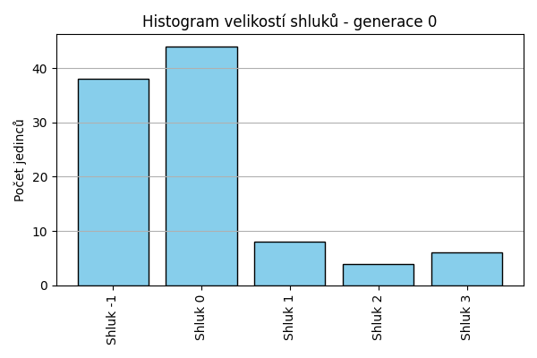
Generace 1
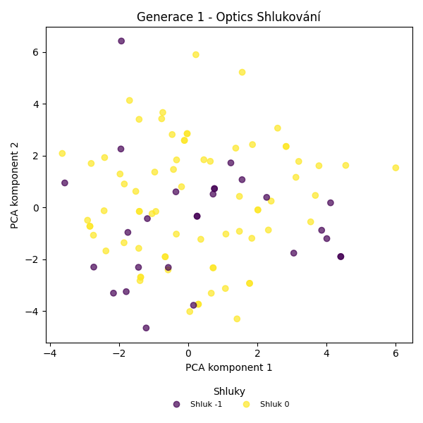
Posun centroidů mezi generací 0 → 1:
- Shluk 0: 1.8209
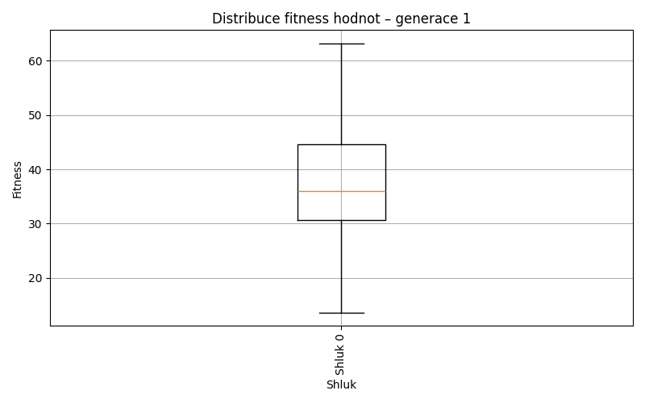
Generace 2
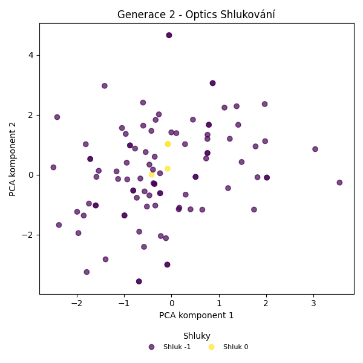
Posun centroidů mezi generací 1 → 2:
- Shluk 0: 3.5456
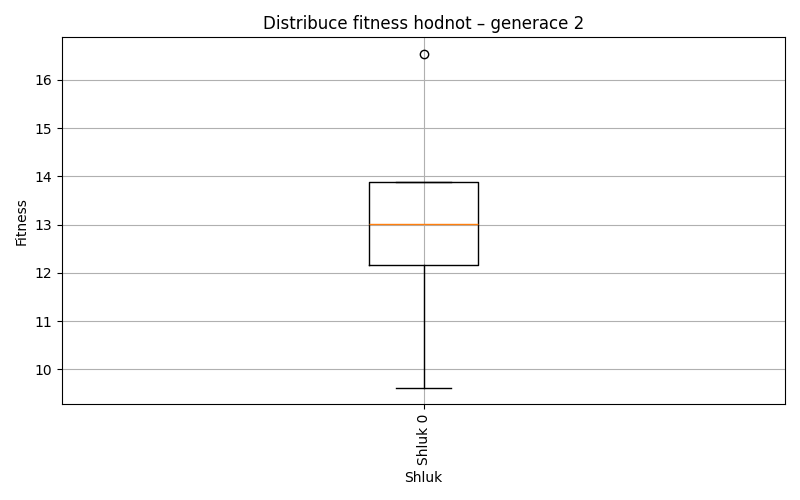
Generace 3
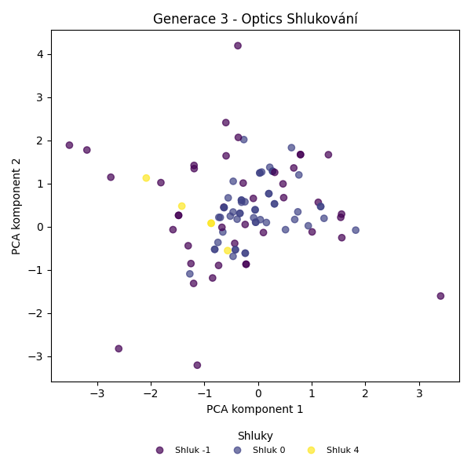
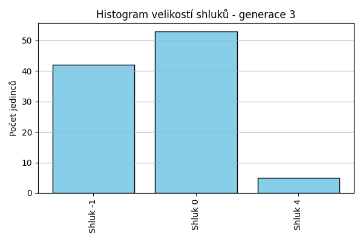
Posun centroidů mezi generací 2 → 3:
- Shluk 0: 3.0950
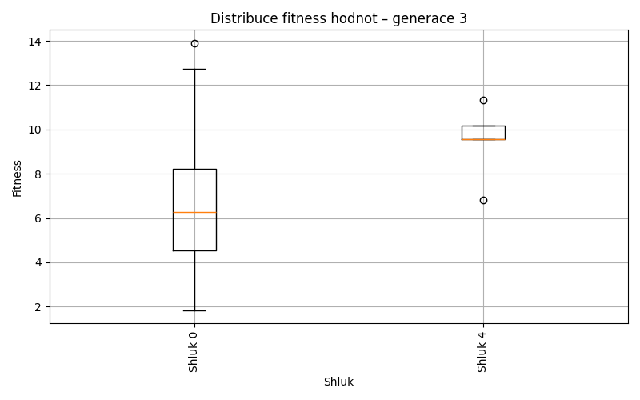
Generace 4
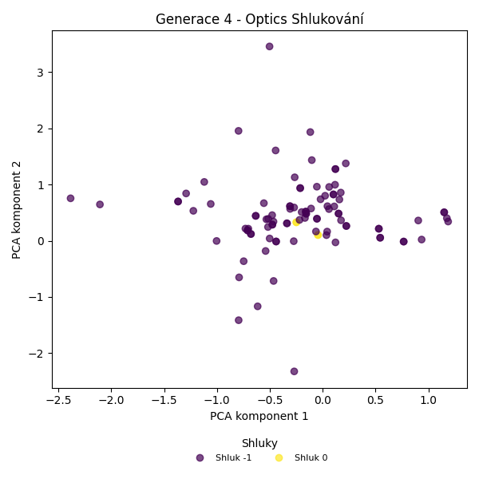
Posun centroidů mezi generací 3 → 4:
- Shluk 0: 1.3628
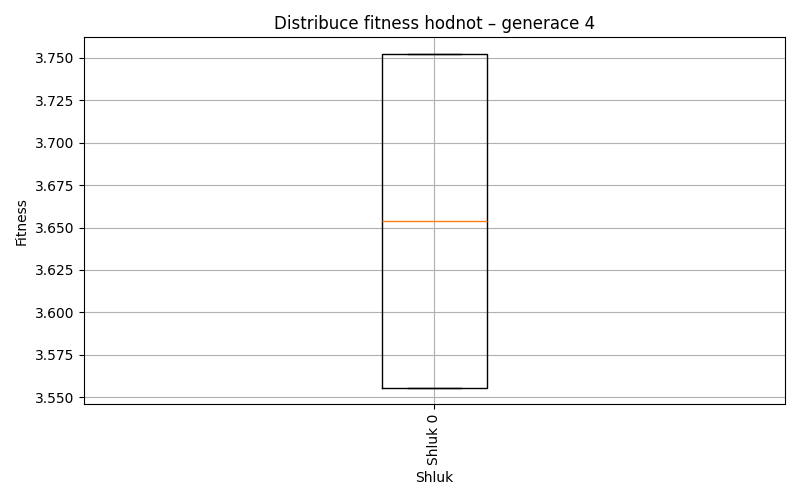
Generace 5
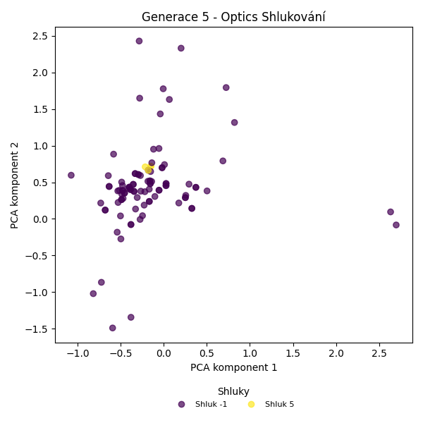
Posun centroidů mezi generací 4 → 5:
- Shluk 0: 2.0008
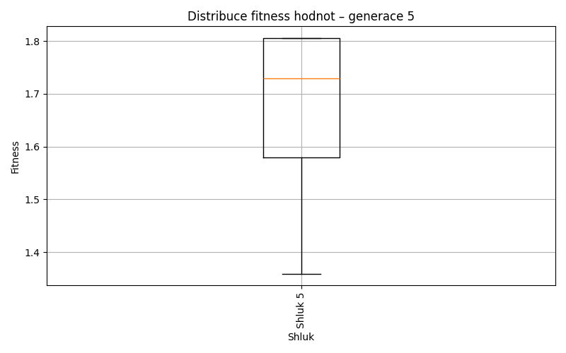
Generace 6
Posun centroidů mezi generací 5 → 6:
- Shluk 0: 0.9848
Generace 7
Posun centroidů mezi generací 6 → 7:
- Shluk 0: 0.5425
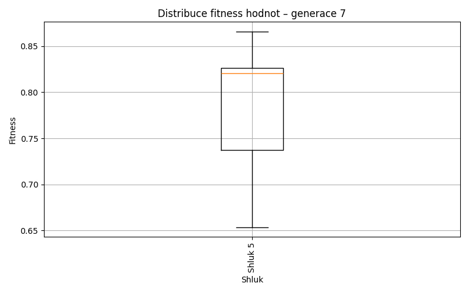
Generace 8
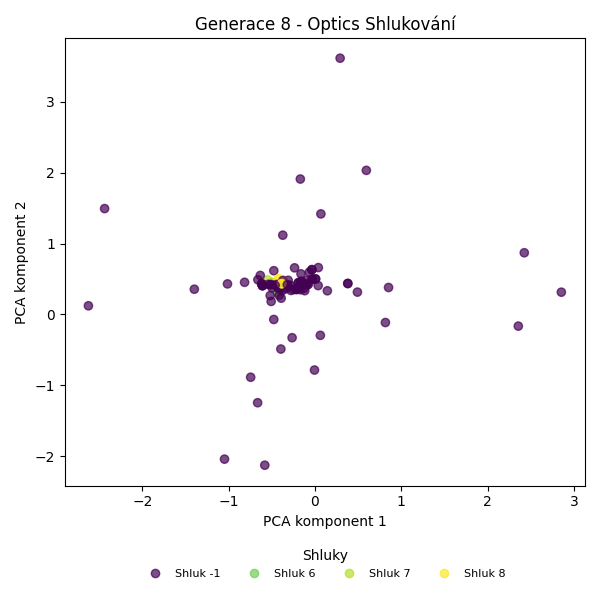
Posun centroidů mezi generací 7 → 8:
- Shluk 0: 0.7317
Generace 9
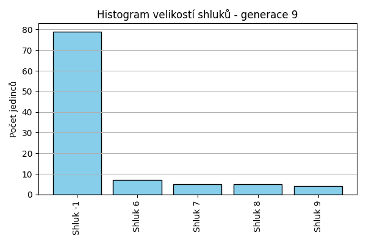
Posun centroidů mezi generací 8 → 9:
- Shluk 0: 0.0293
- Shluk 1: 0.1111
- Shluk 2: 0.0693
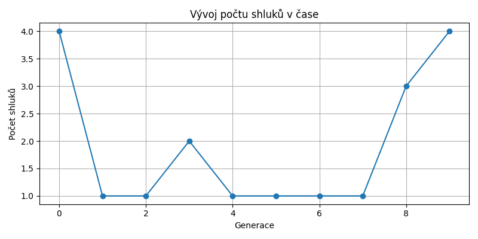